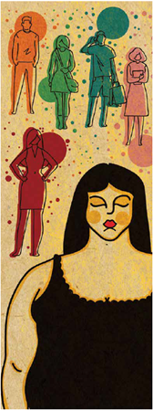

Preconceito é o ato de julgar algo ou alguém antes de conhecer o objeto de juízo. Podemos
aplicar o
termo preconceito às mais diversas situações cotidianas, como o preconceito formulado por aquele
tipo de comida que você não experimentou e julga pela aparência. No entanto, o objeto deste
texto é
o preconceito nas relações humanas.
Esse preconceito acontece das mais variadas formas e pelos mais variados motivos: pode ter
origem na
cor da pele, na religião, no país ou cidade de origem, na aparência física, no gênero, na
sexualidade etc. Qualquer forma de preconceito nas relações humanas é prejudicial para o
desenvolvimento de uma sociedade justa, democrática e igualitária.
Preconceito é uma opinião formulada sem a devida reflexão ou exame crítico. Geralmente
desprovida de
qualquer fundamento, essa opinião acaba influenciando modos de pensar e agir, podendo determinar
atos de intolerância contra pessoas ou grupos sociais.
Dentre os tipos de preconceito que existem na nossa sociedade, são comuns os preconceitos contra
condição social, nacionalidade ou origem, orientação sexual, identidade de gênero, etnia, raça e
maneira de falar.
A origem do preconceito está nos valores, ideologias, interesses ou crenças de um determinado
grupo
social. O preconceito parte de uma visão de mundo pouco elaborada, repleta de ideias e certezas
que
não sobrevivem a um mínimo de reflexão ou exame crítico.

O que é Preconceito?
Tipos de Preconceito